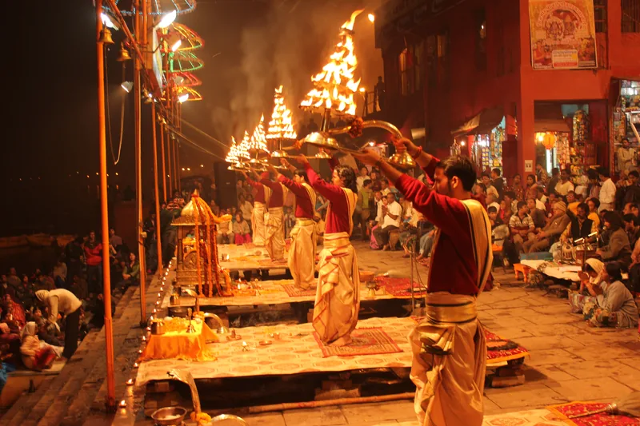

Varanasi Air Show 2026: Wings Over Ganges Dates, Timings & Free Entry
Indian Air Force mega aerial display at Namo Ghat & Ganga Riverfront: Oct 22-25 schedule, Rafale & Surya Kiran aerobatics, top 6 viewing ghats, and Ayodhya to Varanasi cab transfers.
Read Air Show Guide